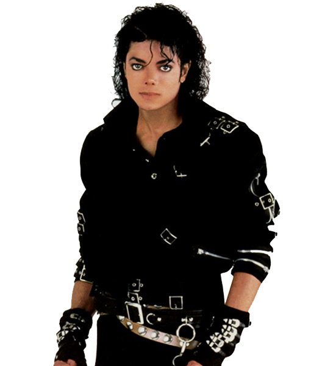
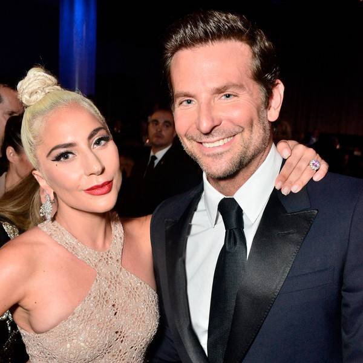
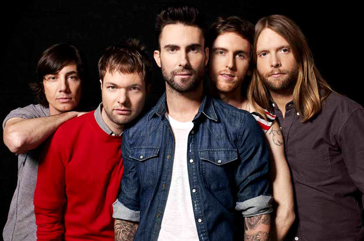

Pop music is a genre of popular music that originated in its modern form in the United States and United Kingdom during the mid-1950s.
learn more about Pop music
Like
Song
Artist
Youtube link
Interesting facts
Picture
Billie Jean
Michael Jackson
This song is about a girl who claimed Jackson was the father of her child.
Jackson came up with the song's rhythm track on his home drum machine and nailed the vocals in one take.
This was the second of seven US Top 10 hits from the Thriller album.

Perfect
Ed Sheeran
Ed Sheeran wrote this waltz-time love song for his girlfriend Cherry Seaborn, who is an old school friend.
The wedding song looks forward to a future of children and family and growing old together.
This was the most-heard song on US radio in 2018 with 3.99 billion audience impressions.
Shallow
Lady Gaga, Bradley Cooper
the song was recorded for the 2018 remake of the classic movie A Star is Born.
Lady Gaga wrote the song in four hours with British-American producer Mark Ronson, former Dirty Pretty Things guitarist Anthony Rossomando, and songwriter Andrew Wyatt.
"Shallow" jumped from #21 to #1 on the Hot 100 following the pair's performance of the song at the Academy Awards.

Girls Like You
Maroon 5
"Girls Like You" is an upbeat love song in which Adam Levine shows his appreciation for his girl after overcoming a difficult time in their relationship.
Maroon 5 debuted "Girls Like You" on May 30, 2018 during their Red Pill Blues Tour gig in Tacoma, Washington.
The song was Maroon 5's fourth Hot 100 #1 hit

7 Rings
Ariana Grande
Ariana Grande tweeted that the song came about after a "pretty rough day" in New York City following her split from Pete Davidson.
In the verses, Grande boosts Julie Andrews' flow from The Sound of Music's "My Favorite Things" as she details some of the things she loves spending money on.
"7 Rings" accrued 14,966,544 global plays on Spotify in the 24 hours after being released on January 18, 2018, smashing the single-day record for streams on the platform.